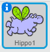
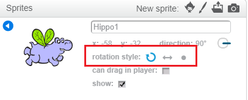

You can set which way a sprite rotates.
- Click on the blue i near the sprite in the Sprites panel.

- Click on the rotation style you want.

The styles are:
- Full rotation — points the sprite in the direction it is facing
- Left–right — flips the sprite left or right only
- Don't rotate — the sprite looks the same regardless of which direction it is facing